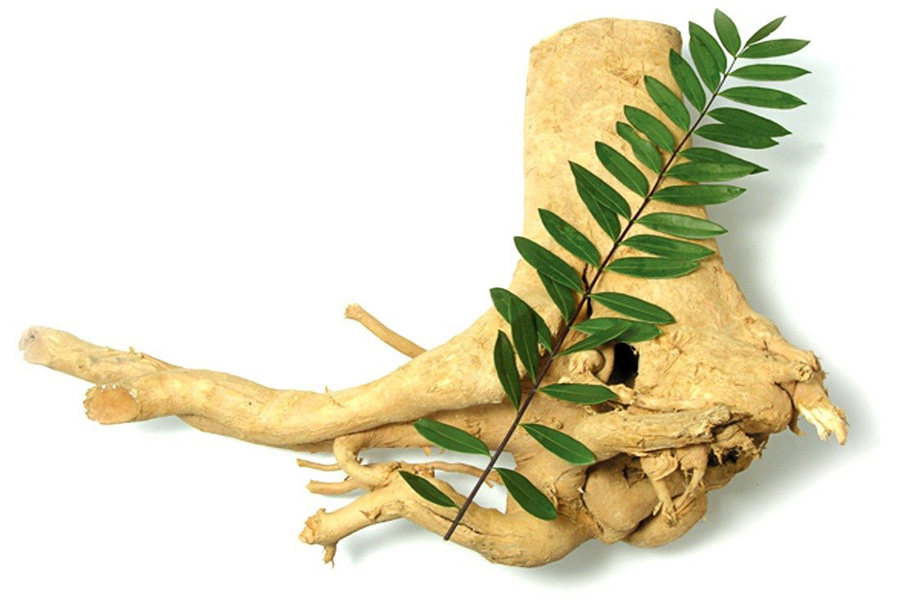

สมุนไพรไทย 22 ชนิดเสี่ยงสูญพันธุ์
ประกาศคุ้มครองและควบคุม 7 ชนิด
สธ. ประกาศรายชื่อ “สมุนไพรไทย” 22 ชนิดเสี่ยงสูญพันธุ์ เหตุเติบโตช้า เมื่อใช้ต้องใช้ทั้งต้น หรือทั้งราก หรือใช้บ่อยจึงรักษาได้ คัดเลือกสมุนไพร 7 ชนิด ออกประกาศคุ้มครองและควบคุม ผู้ครอบครองต้องแจ้งจำนวนที่มี เพื่อทำแผนการใช้และการปลูกทดแทน
นายนันทศักดิ์ โชติชนะเดชาวงศ์ ผู้อำนวยการกองคุ้มครองภูมิปัญญาการแพทย์แผนไทยและพื้นบ้านไทย กรมพัฒนาการแพทย์แผนไทยและการแพทย์ทางเลือก กระทรวงสาธารณสุข (สธ.) กล่าวว่า ขณะนี้มีสมุนไพรไทย 22 ชนิด ที่เสี่ยงอาจจะสูญพันธุ์ได้ “ตามปกติแต่ละจังหวัดจะมีการจดทะเบียนรายชื่อสมุนไพรที่มีอยู่ในจังหวัดนั้นๆ แบ่งออกเป็น 3 ประเภท คือ 1. สมุนไพรเพื่อการศึกษา 2. สมุนไพรพืชเศรษฐกิจ และ 3. สมุนไพรเสี่ยงอาจสูญพันธุ์ โดยจะมีคณะผู้เชี่ยวชาญเข้ามาจัดทำข้อมูลของสมุนไพรทั้ง 3 ประเภท จากนั้นได้เลือกออกมาเป็น 22 ชนิด ที่เสี่ยงอาจจะสูญพันธุ์ เนื่องจากเป็นสมุนไพรที่เติบโตช้า เมื่อจะใช้ต้องใช้ทั้งต้น บางชนิดใช้ทั้งราก และต้องใช้บ่อยจึงจะสามารถรักษาอาการได้” นายนันทศักดิ์ กล่าว
นายนันทศักดิ์ กล่าวว่า คณะกรรมการคุ้มครองและส่งเสริมภูมิปัญญาการแพทย์แผนไทยได้ประชุมหารือกัน โดยเลือกสมุนไพร 6 ชนิดจาก 22 ชนิดขึ้นมา คือ ถั่วดินโคก หรือ พิษนาศน์ เทพทาโร มะตูมนิ่ม มะหาด เร่ว และ หัวร้อยรู นอกจากนี้ ยังเสนอสมุนไพร “กระวาน” ขึ้นมาเป็นพิเศษด้วยอีกชนิดหนึ่ง เพื่อประกาศคุ้มครองและเป็นสมุนไพรที่ต้องควบคุม โดยหากใครมีสมุนไพร 7 ตัวนี้อยู่ในครอบครองไม่ได้ถือว่ามีความผิด เพียงแต่ต้องแจ้งมาทาง สธ. ให้รับทราบว่ามีอยู่เท่าใด เพื่อที่จะจัดทำแผนส่งเสริมการปลูกต่อไป เช่น บริษัทใดมีสมุนไพร 7 นี้อยู่ ใช้ผลิตยาไปเท่าใด ต้องปลูกทดแทนเท่าใด เพื่อไม่ให้สูญพันธุ์ เป็นต้น
ถั่วดินโคก
- สรรพคุณ : ยาสมุนไพรพื้นบ้านจังหวัดอุบลราชธานี ใช้รากฝนกับน้ำดื่มช่วยลดไข้ในเด็ก ฝนทาแก้พิษงู ต้มน้ำดื่ม บำรุงน้ำนม ราก เหง้า ลำต้น ใบ ฝนทาแก้ฝี
เทพทาโร
- สรรพคุณ : ใบ เรียกว่า ใบกระจาน ใช้ทำเครื่องเทศ ขับลม บำรุงธาตุ แก้ท้องอืดท้องเฟ้อ เนื้อไม้ แก้ลมจุกเสียด แน่นเฟ้อ ขับลมในกระเพาะอาหารและลำไส้ แก้ปวดท้อง
มะตูมนิ่ม
- สรรพคุณ : รากมะตูมรสปร่าชาขื่นเล็กน้อยแก้พิษฝีแก้ไข้แก้ลมหืดหอบไอช่วยบำบัดเสมหะรักษาน้ำดีใบรสฝาดเป็นยา บำรุงธาตุทำให้เจริญอาหาร แก้โรคลำไส้ แก้ท้องเดินน้ำที่คั้นจากใบใช้แก้หวัดแก้หลอดลมอักเสบผลมะตูมสุก รสหวาน สรรพคุณ แก้ลม แก้เสมหะ แก้มูกเลือด บำรุงไฟธาตุ แก้กระหายน้ำ ขับลมผาย
มะหาด
- สรรพคุณ : เป็นยาขับพยาธิตัวตืดและพยาธิไส้เดือน หรือใช้ละลายน้ำ ทาแก้ผื่นคัน แก่น รสร้อน ขับพยาธิตัวตืด แก้ลม แก้ท้องอืดเฟ้อ แก้กษัย แก้เส้นเอ็นพิการ แก้เบื่ออาหาร แก้ลม ขับโลหิต ละลายเลือด ขับปัสสาวะ แก้ไข้ต่างๆ แก้น้ำเหลืองเสีย แก้ประดงทุกชนิด แก้หอบหืด แก้เสมหะ ราก แก้ไข้ ขับพิษร้อนใน ขับพยาธิ แก้กษัยในเส้นเอ็น เปลือกต้น รสฝาด ใช้เคี้ยวกับหมากแทนสีเสียด เปลือกต้นสด สมาน ทาขับพยาธิ ต้มกินแก้ไข้ ขับพยาธิ ผลสุก รับประทานได้ รสหวานอมเปรี้ยว
เร่ว
- สรรพคุณ : ผลเร่วน้อย รสร้อนเผ็ดปร่า แก้ไข้ แก้ริดสีดวง แก้หืดไอ เสมหะ แก้ระดูขาว แก้ไข้สันนิบาต เมล็ดเร่วน้อย รสร้อนเผ็ดปร่า ขับลมในลำไส้ แก้ท้องขึ้น อืดเฟ้อ ปวดท้อง แก้คลื่นเหียน อาเจียน แก้ริดสีดวง หืดไอ กัดเสมหะ แก้ไข้สันนิบาต ขับน้ำนม ผลเร่วใหญ่ รสมันเฝื่อนติดเปรี้ยว แก้ไข้เพื่อดีและเสมหะ แก้ริดสีดวงทวารทั้ง 9 รักษาอาการขัดในทรวง บรรเทาอาการกระหายน้ำ แก้ธาตุพิการ แก้ท้องอืดเฟ้อจุกเสียด แก้ปวดท้อง แก้มุตกิดระดูขาว แก้หืดไอ แก้เสมหะอันบังเกิดแต่ดี แก้โลหิตขึ้นเบื้องสูง แก้ไข้สันนิบาต ขับผายลม ทำให้เรอ
หัวร้อยรู
- สรรพคุณ : บำรุงหัวใจ ขับชีพจร ขับพยาธิ แก้พิษในข้อในกระดูก แก้พิษประดง แก้ข้อเข่าข้อเท้าบวม รักษามะเร็ง หัวร้อยรู จัดอยู่ใน “พิกัดมหากาฬทั้ง 5” คือการจำกัดตัวยารักษากาฬ 5 อย่างมี หัวถั่วพู หัวกระเช้าผีมด หัวร้อยรู มหากาฬนกยูง มหากาฬใหญ่ สรรพคุณ ดับพิษร้อน ถอนพิษไข้ แก้พิษอักเสบ ช้ำบวม แก้พิษไข้ ไข้กาฬ ประดงผื่นคัน น้ำเหลืองเสีย
กระทุ่มนา
- สรรพคุณ : ช่วยลดความดันโลหิตและออกฤทธิ์กดประสาทและกล้ามเนื้อในสัตว์ทดลอง เปลือกต้น รสฝานร้อน รักษาโรคผิวหนังทุกชนิด แก้มะเร็งคุดทะราด แก้บิดมูกเลือด
ขันทองพยาบาท
- สรรพคุณ : แก้ลมเป็นพิษ แก้พิษต่างๆ แก้ลมพิษ แก้พิษในกระดูก แก้โรคประดง แก้โรคผิวหนัง ฆ่าพยาธิผิวหนัง แก้โรคมะเร็ง คุดทะราด แก้กามโรค ฆ่าพยาธิ แก้โรคเรื้อน แก้กลากเกลื้อน ฆ่าพยาธิโรคเรื้อน
จุกโรหินี
- สรรพคุณ : แก้อาการอ่อนเพลีย ช่วยบำรุงกำลัง แก้ไข้เพื่อโลหิต แก้ลมปลายไข้ แก้อาการร้อนในกระหายน้ำ ช่วยลดความร้อนในร่างกาย แก้อาการไอเมื่อเคี้ยวกับพลู แก้หอบหืด แก้อาการอาเจียน แก้เสมหะพิการ แก้อาการท้องร่วงและท้องเสีย แก้บิด แก้ปวดเบ่ง แก้มูกเลือด เป็นยาฝาดสมานหรือใช้ทาเป็นยาสมานแผล
ชะเอมไทย
- สรรพคุณ : แก้โรคในลำคอ แก้ลม แก้เลือดออกตามไรฟัน บำรุงธาตุและบำรุงกำลัง แก้อ่อนเพลีย บำรุงกล้ามเนื้อให้เจริญ แก้ไอ ขับเสมหะ แก้น้ำลายเหนียว ต้น รสหวานเอียน ถ่ายลม แก้โรคในคอ ทำผิวหนังให้สดชื่น แก้โรคตา ราก มีรสหวาน ทำให้ชุ่มคอ แก้กระหายน้ำ และเป็นยาระบาย มีสรรพคุณแก้ไอ ขับเสมหะ แก้เจ็บคอ แก้โลหิตอันเน่าในอุทร และเจริญซึ่งหทัยวาตให้สดชื่น แก้กำเดาให้เป็นปกติ
ชิงชี่
- สรรพคุณ : แก้โรคที่เกิดในท้อง ขับลมภายใน แก้ไข้ร้อนในทุกชนิด ไข้พิษ แก้โรคตา โรคกระเพาะ รักษามะเร็ง ช่วยให้มดลูกเข้าอู่ และเป็นยาบำรุงหลังคลอดบุตร แก้ไอเนื่องจากหลอดลมอักเสบ แก้หืด
ตับเต่า
- สรรพคุณ : ช่วยบำรุงสุขภาพ บำบัดอาการปวดหลัง ปวดข้อ ปวดเส้นเอ็นและกระดูก ใช้ดับพิษร้อน;ล แก้ไข้ แก้ร้อนใน แก้พิษไข้ แก้พิษทั้งปวง แก้อาเจียนเป็นเลือด แก้ถ่ายเป็นเลือด แก้วัณโรครากสามารถใช้ปรุงเป็นยารักษาแผลเรื้อรังได้
นางแย้มป่า
- สรรพคุณ : แก้อาการปวดศีรษะข้างเดียว ด้วยการนำใบมาซ้อนกัน 3 ใบ หรือ 7 ใบ แล้วใช้ห่อขี้เถ้าร้อน ใบฮ่อมตำและใบเครือเขาน้ำตำ แล้วนำมาประคบศีรษะ รักษาลำไส้อักเสบ ช่วยขับปัสสาวะ แก้ไตพิการ เป็นยาแก้ไข้ บำรุงน้ำนมของสตรี ด้
ปลาไหลเผือก

- สรรพคุณ : ใช้ ราก รสขม เบื่อเมาเล็กน้อย ถ่ายพิษต่างๆ ถ่ายฝีในท้อง ถ่ายพิษไข้พิษเสมหะ และโลหิต แก้ไข้ แก้ไข้มาลาเรีย ตัดไข้ทุกชนิด แก้ลม แก้วัณโรคระยะบวม ขับเหงื่อ ขับพยาธิ แก้ต่อมทอนซิลอักเสบ แก้เจ็บคอ ความดันเลือดสูง อัมพาต ขับถ่ายน้ำเหลือง แก้ท้องผูก
พังคี
- สรรพคุณ : ช่วยคลายเส้นเอ็น และทำให้การไหลเวียนของเลือดดีขึ้น ขับลมชื้น ใช้รักษาโรคไขข้ออักเสบเนื่องจากลมชื้นเกาะติด แก้ปวด เช่น ปวดหลัง ปวดเอว ปวดแข้งขา แก้ฟกช้ำดำเขียว แก้อาการท้องอืดเฟ้อ จุกเสียด แน่นหน้าอก แก้ปวดกระเพาะ ปวดท้องน้อย
มะคังแดง
- สรรพคุณ : แก้ปวดเส้นเอ็น อัมพฤกษ์ อัมพาต แก้ริดสีดวงทวาร แก่น ต้มน้ำดื่มแก้ปวดเมื่อย แก้ปวดประจำเดือน แก่นผสมกับมุ่ยขาว มุ่ยแดง หนามแท่ง เล็บแมว เงี่ยงปลาดุก รักษาโรคกระเพาะอาหาร มะเร็ง
สะค้าน
- สรรพคุณ : รสเผ็ดร้อน ขับลมในลำไส้ แก้แน่น แก้จุกเสียด บำรุงธาตุ ทำให้ผายเรอ และใช้ปรุงยาธาตุ แก้ธาตุพิการ เป็นตัวยาประจำธาตุลม แก้ลมอัมพฤกษ์ แก้ลมในทรวงอก ขับลมในลำไส้
สารภีป่าสารภีป่า
- สรรพคุณ : ดอกมีสรรพคุณบำรุงหัวใจ ใบและกิ่งใช้แก้ไข้มาลาเรีย ใช้ถ่ายพยาธิ แก้บิด และแก้ไข้
อบเชยไทย
- สรรพคุณ : แก้ปวดและต้านอักเสบ ต้านออกซิเดชั่น ต้านมะเร็งเม็ดเลือดขาว ลดความดัน ลดการหดเกร็งของหลอดลม ลำไส้เล็ก ลำไส้ใหญ่ และกระเพาะอาหาร ช่วยให้แผลหายเร็วขึ้นในหนู ลดน้ำตาลและไขมันในเลือดหนู มีฤทธิ์ต้านมะเร็ง
เฉียงพร้านางแอ
- สรรพคุณ : ใช้ เปลือกต้น รสฝาดเย็น แก้ไข้ แก้ร้อนในกระหายน้ำ ขับเสมหะ และโลหิต ปิดธาตุ สมานแผล แก้บิด แก้พิษผิดสำแดง ต้น แก้ไข้ บำรุงร่างกาย และช่วยเจริญอาหาร
เถาเอ็นอ่อน
- สรรพคุณ : ใช้ เถา ต้มดื่มบำรุงเส้นเอ็นให้แข็งแรง แก้เส้นเอ็นพิการ เส้นแข็ง แก้ปวดเมื่อยเส้นเอ็น แก้ขัดยอก ทำให้คลายการตึงตัว เป็นสมุนไพรที่มีการนำมาใช้ในสูตรยาอบสมุนไพรเพื่อสุขภาพ โดยใช้เป็นส่วนประกอบเพิ่มเติมจากสูตรยาอบสมุนไพรหลัก เมื่อต้องการอบเพื่อรักษาอาการปวดเมื่อย ปวดหลัง ปวดเอว
เปราะหอม
- สรรพคุณ : รสเผ็ดขม สุมศรีษะเด็ก แก้หวัดคัดจมูก รับประทานขับลมในลำไส้ แก้เสมหะ เจริญไฟธาตุ แก้ลงท้อง แก้โลหิตซึ่งเจือด้วยลมพิษ ช่วยรักษาโรคตา แก้ตาอักเสบ ตาแฉะ ช่วยแก้อาการไอ ช่วยแก้เสมหะ